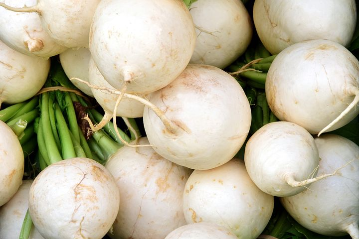
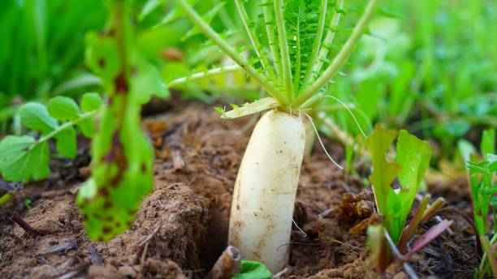
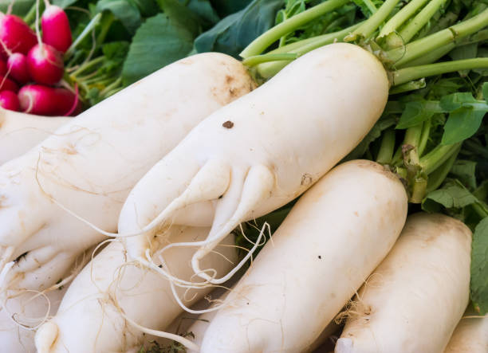

Radishes are an annual root vegetable and a member of the Brassicaceae or cabbage family, which includes broccoli, cabbage, cauliflower, kale, collards, and, as the name suggests, horseradish. The entire plant is edible—from root to leaves—and can be enjoyed raw or cooked. (See Cooking notes below.)
Seeds can be planted in both the spring and the fall, but sowing should be suspended when warm temperatures arrive (70 degrees or higher); this causes radishes to bolt, making them essentially useless. Otherwise, radishes are one of the easiest vegetables to grow.
Because radishes mature so quickly, you can really sow them anywhere there is an empty space or sow in between rows of other vegetables such as carrots or beets. Radishes also happen to make excellent companion plants to help deter pests from other vegetables.

planting
Choose a sunny spot that gets at least six hours of sun a day. If radishes are planted in too much shade, or even where neighboring vegetable plants shade them, they will put all their energy into producing larger leaves.
Till the soil (roots to do not grow well in compacted soil) and remove any rocks. If the soil is clay, mix in some organic matter to loosen and improve drainage. If you’re planting longer varieties (such as ‘White Icicle”), till to a depth of 8 inches.
When to Plant Radishes
For a spring planting, sow seeds 4 to 6 weeks before the last spring frost.
For a fall crop, sow seeds 4 to 6 weeks before the first fall frost.
How to Plant Radishes
Add organic matter before sowing but also avoid fresh manure or fertilizers high in nitrogen; overly rich soil will encourage lush foliage at the expense of radish roots.
Radish seeds have a fairly long shelf life. Don’t be afraid to plant radish seeds that are up to 5 years old. All may not germinate, but you’ll have plenty that will.
Direct-sow seeds outdoors about 1/2-inch deep and cover loosely with soil. Space 1 inch apart in rows 12 inches apart. Water seeds thoroughly, down to 6 inches deep.
Sow another round of seeds every 10 days or so while weather is still cool for a continuous harvest of radishes in the late spring and early summer.
growing
Thinning Radishes
“Thinning” is probably the most important step of growing radishes. Once the seedlings are 2 inches tall or about a week old, it’s important to thin radishes to three-inch spacings. Crowded radishes do not grow well and you’ll end up getting small, shriveled, inedible roots.
To thin, just snip the greens at the soil line. The thinnings are edible, so add to a salad! Or, if thinnings have been carefully extracted with roots, leaves, and stem intact, replant then. Transplants might be a bit stressed, but they should recover.

Watering Radishes
Consistent, even moisture is key. Don’t let it dry out or you’ll get pithy, pungent roots but don’t let it get waterlogged or the roots will rot. A drip irrigation system is a great way to achieve this.
Mulch the radishes with compost enriched with wood ashes to help retain moisture in dry condition as well as keep root maggots at bay.
Weed often; weeds will quickly crowd out radishes.
recommended varieties
There are both “spring” and “winter” radishes. Note: the small round varieties do not tolerate heat as well as the longer types so plant the small types first in early spring before mid-size. In general, we find that smaller radishes are milder in flavor and the larger varieties are spicier.
‘Burpee White’: spring variety; small type; heirloom radish with white crisp flesh; mild flavor
‘Champion’: spring variety; small type; bright scarlet with firm, crisp white flesh; mild flavor
‘Cherry Belle’: small type; round, red with white flesh; heirloom radish; crisp, light flavor
‘German Giant’: spring variety, red baseball-size; never gets too hot; sweet and mild
‘French Breakfast’: spring, late-maturing type can tolerate moderate heat; heirloom radish with 3-inch red roots, oblong shape, mild flavor
‘White Icicle’: late spring, cylindrical white roots up to 5-inches long; can tolerate moderate heat; heirloom; mild-flavored with hints of peppery taste
‘Daikon’: winter radish; grows to 14 inches long; best grown in cooler climates or during the cooler ends of the growing season; crisp and snappy taste
‘Spanish Black’: winter radish; large 3 to 4 inch turnip-shaped globes have crisp, pungent, spicy pure-white flesh; great for storage
‘Watermelon’: winter radish; an heirloom Daikon radish variety with striking white skin and bright red inners; mild flavor with a light peppery tang.
harvesting
The biggest mistake gardeners make with spring radishes is leaving them in the ground past their maturity, they will get tough and taste starchy. Winter radishes, on the other hand, can keep in the ground for a few weeks after they mature, if the weather is cool. Finish the harvest before frost.
To harvest, check your seed packet! Different types of radishes have different grow times. Some varieties are pulled as soon as 3 weeks after planting, when roots are approximately 1 inch in diameter. Pull one out as a test.
Another good sign that your radish root is doing well is that the green growth above the soil is 6 to 8 inches tall.
Finally, you should see or feel the “shoulder” or top part of the radish pushing up against the top soil.
If some radishes bolt before you have a chance to harvest them, leave a few to develop seedpods. The seedpods, which look like tiny bean or pea pods, are actually quite tasty in a salad.
How to Store Radishes
Cut off the tops and the thin root tail, wash the radishes, and dry them thoroughly. Store in produce or zip-top bags in the crisper drawer of the refrigerator.
Radish greens can be stored separately for up to 3 days. Put them in a separate produce bag with a dry paper towel.

pests/diseases
Radish Pests and Diseases
Pest/Disease
Type
Symptoms
Control/Prevention
Cabbage root maggots
Insects
Wilted/stunted plants; off-color leaves; larvae feeding on roots
Use collars around seedling stems; monitor adults with yellow sticky traps; use row covers; destroy crop residue; till soil in fall; rotate crops
Cabbage worms
Insects
Leaves have large, ragged holes or are skeletonized; heads bored; dark green excrement; yellowish eggs laid singly on leaf undersides
Handpick; use row covers; add native plants to invite beneficial insects; grow companion plants(especially thyme); spray Bacillus thuringiensis (a bacteria that affects larvae and grubs)
Destroy infected plants; solarize soil; maintain soil pH of around 7.2; disinfect tools; rotate crops
Flea beetles
Insect
Numerous tiny holes in leaves
Use row covers; mulch heavily; add native plants to invite beneficial insects
White rust
Fungus
Chalk-white blisters mainly on leaf undersides; small, yellow-green spots or blisters, sometimes in circular arrangement, on upper leaf surfaces; possible distortion or galls; stems may also be infected